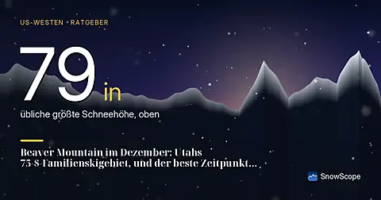
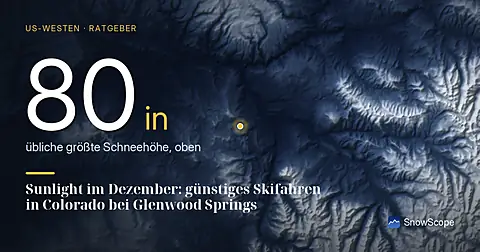
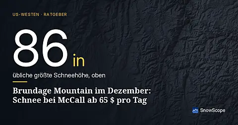
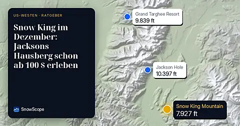
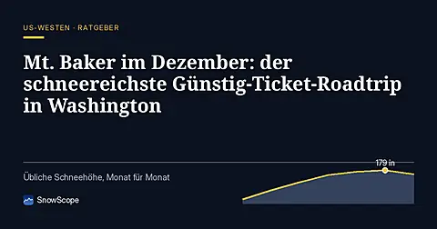
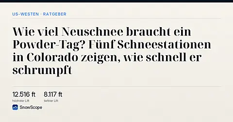
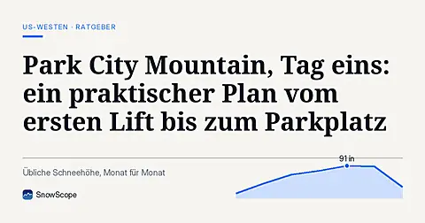

Schneeberichte · US-Westen
Tägliche Schneeberichte für Skifahrer: wo der Schnee liegt, was kommt und wo du fahren kannst, aus der SnowScope-Schneekarte und Messstationen. Jede Zahl stammt aus den Daten des Tages.

Beaver Mountain verlangt für die Saison 2026-27 einen einheitlichen Erwachsenenpreis von 75 $ pro Tag. Unsere Schneehistorie zeigt: Anfang Dezember ist dort Glückssache; die Woche vor Weihnachten ist deutlich sicherer.

Bridger Bowls Erwachsenenticket 2026/27 kostet 86 $ online, 99 $ am Schalter. Unsere Historie sagt: Mitte Dezember ist auf der Bergmitte Glückssache; Ende Dezember ist sicherer.

Indy Base Pass 419 $, Indy+ 469 $, zwei Tage in jedem Partnergebiet. Wir haben ihn den geprüften Dezember-Tagespreisen von sieben Indy-Gebieten gegenübergestellt, samt ihrer Schneechancen.

Erwachsenentickets bei Lookout Pass kosten 2026-2027 unter der Woche mit Reservierung 63 $, am Wochenende 75 $. Die Bergmitte hatte bis zum 15. Dezember in 85 % der vergangenen Winter 20 in (50 cm).

Montana Snowbowls Erwachsenentickets 2026/27 kosten 78 $ unter der Woche und 85 $ am Wochenende. Die Bergmitte hatte bis zum 15. Dezember in 83 % unserer vergangenen Winter 20 in (50 cm).


Sunlight-Tickets starten bei 74 $, und der Sunny 6 Pack kostet 349 $, wenn er bis zum 30. November 2026 gekauft wird. Die Bergmitte hatte bis zum 15. Dezember in 72 % der Winter 20 in (50 cm).

Ein Timberline-Tagesticket kostet 129 $ außerhalb der Spitzenzeiten und 161 $ zur Spitzenzeit; das Nachmittagsticket liegt bei 96 $ außerhalb der Spitzenzeiten. Auf der Mittelstation liegen bis zum 15. Dezember meist 52 in (132 cm) Schnee.

Von Ski Cooper (49 $ unter der Woche, 99 $ am Wochenende) bis Mt. Baker (98,80 $ gegen 115,42 $): geprüfte Dezember-Preisunterschiede an sieben US-West-Skigebieten, mit ihren Schneechancen.

Schweitzers 3-Pack für 2026/2027 kostet 249 $, laut eigener Rechnung des Resorts 83 $ pro Tag. Oben hält sich bis zum 15. Dezember meist 54 in (138 cm) Schnee.

Brighton ab 72 $ gegen Ski Cooper mit 49 $ unter der Woche und Wolf Creek mit 96 $: Budget-Skigebiete in Utah und Colorado im Vergleich über 46 Winter Dezember-Schnee.

Brundage-Tagestickets starten an ausgewählten Tagen bei nur 65 $; die Bergmitte hatte am 15. Dezember in 87 % unserer vergangenen Winter 20 in (50 cm) Schnee. Feiertagsdaten, die man meiden sollte.

Die Tageskarte für Erwachsene bei Snow King startet bei 100 $. Laut unserer Schneehistorie lag auf halber Höhe bis zum 15. Dezember in 87 % der Winter eine Schneedecke von 20 in (50 cm): eine günstige Art, das Jackson-Tal zu beskifahren.

Loveland verkauft Online-Tickets für 60 $ bis zum 13. Dezember 2026, danach 159 $ am Schalter. Reicht der Schnee Anfang Dezember aus? Unsere 46 vergangenen Winter antworten Woche für Woche.

Online-Tickets für White Pass kosten ab 69 $ außerhalb der Stoßzeiten und 89 $ an Spitzentagen, und auf halber Berghöhe lagen am 15. Dezember in 87 % der vergangenen Winter 20 in (50 cm) Schnee.

Bei Wolf Creek kostet das Erwachsenenticket für die Saison 2026-2027 an normalen Tagen 96 $ und an Spitzentagen 110 $; auf halber Höhe lagen an einem typischen 15. Dezember 34 in (87 cm) Schnee.

Tageskarten in Brighton starten für 2026/27 bei 72 $, wenn man früh kauft. Auf halber Höhe liegen am 15. Dezember meist 37 in (94 cm) Schnee, gegenüber 25 in (64 cm) in Park City.

16 preisgünstige US-Skigebiete, eingestuft nach den Dezember-Schneechancen aus 46 vergangenen Wintern, mit den geprüften Tagespreisen: von 49 $ unter der Woche bis 125 $ und mehr.

In all unseren 46 vergangenen Wintern lagen an Grand Targhees Mittelstation am 15. Dezember mindestens 20 in (50 cm) Schnee. Das Online-Tagesticket kostet je nach Datum 125 $ bis 180 $.

Mt. Baker im Dezember: 46 in (116 cm) Schnee auf halber Höhe an einem typischen 15. Dezember, und ein 98,80-$-Ticket von Montag bis Donnerstag, das es nur am Tag selbst an der Kasse gibt.

Ein Sturm am 4. November brachte 8 bis 13 inches Neuschnee an fünf hoch gelegenen Stationen in Colorado nahe Aspen. Fünf Tage später war die Hälfte weg. Was das für Powder-Tage bedeutet.

Wo der Dezember 2026 von Montana bis New Mexico schneereicher oder schneeärmer aussieht: die europäische Saisonprognose und unsere Karte, mit Colorado, Utah und den nördlichen Rockies.

Vail in Zahlen: übliches Maximum von etwa 64 in (162 cm) an der Mittelstation in 46 vergangenen Wintern, März am schneereichsten, dazu Gelände, Anreise, Sicherheit.

Steamboat, Colorado, für Familien: was für Kleinkinder, Schulkinder, Teenager und Eltern passt, mit dem Schnee aus 46 vergangenen Wintern auf drei Höhen.

Wie du den ersten Tag in Park City Mountain, Utah, verbringst und wann du fährst: Unsere Schneehistorie gibt etwa 71 in (180 cm) als übliches Maximum an der Mittelstation in 46 vergangenen Wintern.

Mt Baker, Washington: etwa 133 in (337 cm) übliches Maximum an der Mittelstation in 46 vergangenen Wintern, ein Schneefall-Weltrekord, keine Unterkunft am Berg.

Mammoth Mountain nach Saison planen: etwa 93 in (235 cm) übliches Maximum an der Mittelstation in 46 vergangenen Wintern, März am tiefsten, lange Frühjahre, schwankende Winter.

Mythen über Jackson Hole im Faktencheck mit unserer Schneehistorie: etwa 80 in (204 cm) übliches Maximum an der Mittelstation in 46 vergangenen Wintern, ohne klaren Rückgang.

Im Winter nach Telluride, Flughafen für Flughafen: Telluride Regional, Montrose, die Fahrt auf dem Highway 145 mit Colorados Traktionsgesetz und die kostenlose Gondel nach Mountain Village.

So kommst du im Winter nach Snowbird: eine Canyonstraße (SR-210), Utahs Traktionsregel, der UTA-Skibus und die Fahrt vom Flughafen Salt Lake City.

Mit dem Auto nach Palisades Tahoe im Winter: Entfernungen ab Reno, Kettenpflicht R-1 bis R-3 in Kalifornien, Parken mit Reservierung, TART-Busse.

Big Sky, Montana, anschaulich: 5.850 Acres unter dem Lone Peak, und Schnee, der in 46 vergangenen Wintern nahe dem Gipfel etwa fünfmal so tief war wie im Tal.

Aspen Snowmass im Vergleich: Snowmass hat etwa 75 in (190 cm) übliches Maximum an der Mittelstation in 46 vergangenen Wintern, Aspen Mountain etwa 69 in (174 cm).

Etwa 109 in (276 cm) ist Altas übliches Maximum an der Mittelstation in 46 vergangenen Wintern. Hier: warum Snowboards daheim bleiben, die besten Monate und wie du in den Canyon kommst.